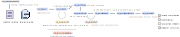

Dense mode analysis
Let’s analyze data from a dense mode experiment.
Gather files
Gather the required metadata file and raw file(s), we recommend putting them into separate folders for simplicity:
meta üìÇ
Contains the single metadata .csv file
Try using the example from the analysis overview page
raw üìÇ
Contains the raw file(s) in 384-well format (and nothing else)
Try using the example from the dense mode protocol
Nothing else should be in these folders at the start of analysis.
Prepare for analysis
The best way to proceed is to use an IDE like RStudio. We need to:
Load the
combocatpackage (see the analysis overview page for installation)Read in the metadata file
Set the working directory to the
rawfolder
#Load library
library(combocat)
#Read in the metadata file using Import Dataset➝From text (readr) or
meta_dense <- read_csv(".../meta_dense.csv")
#Set working directory using Session➝Set Working Directory or
setwd(".../raw")Quick start

The entire workflow of analysis, plotting, and reporting can be run in this single block:
normData <-
cc_map(meta_dense, getwd()) %>%
cc_norm(.) %>%
cc_getSyn(.)
drData <-
cc_getDR(normData)
normData <-
cc_getQC(normData, drData)
cc_report(normData,
drData,
cd_plots = cc_plotMat(normData, "perc_cell_death", color_midpoint = 50),
syn_plots = cc_plotMat(normData, "bliss_synergy", color_midpoint = 20),
extra_plots = cc_plotExtras(normData, color_midpoint=20))Below, the process is broken down into more detail:
Core functions
These are the functions that handle mapping, normalization, synergy quantification, and fitting DR curves:
mappedData <-
cc_map(meta_dense, getwd()) #Map
normData <-
cc_norm(mappedData) %>% #Normalize
cc_getSyn(.) #Calculate synergy
drData <-
cc_getDR(normData) #Fit dose-response modelsQuality Control (QC)
See the Advanced topics section for details of what the QC does and why it is important
normData <- cc_getQC(normData, drData)Generating plots
Now we plot the cell death and synergy matrices, plus the accessory plots (like bar plots of the maximum synergy per combo)
#Plot cell death matrices
cdPlots <-
cc_plotMat(normData,
plotting_variable = "perc_cell_death",
color_midpoint = 50)
#Plot synergy matrices
synPlots <-
cc_plotMat(normData,
plotting_variable = "bliss_synergy",
color_midpoint = 20)
#Accessory plots
extraPlots <-
cc_plotExtras(normData)Generating the reports
Finally, cc_report will save all the plots, and generate detailed reports of cell death, synergy, IC50 values, and much more.
cc_report(normData,
drData,
cdPlots,
synPlots,
extraPlots,
save_summary_files = TRUE,
save_summary_plots = TRUE)For example: